مواد التباينContrast materials
عملي · م01 · 3.0 دقيقةأقسام المحاضرة (9)
- تصنيف مواد التباينContrast Materials Classified
- مواد التباين الذائبة في الماء عن طريق الفمWater Soluble Contrast Media For Oral Use
- مواد التباين الذائبة في الماء للحقن الوريديWater Soluble For IV Used
- التفاعلات مع مواد التباين المحقونة في الوريدReaction to contrast media injected intravenously
- مواد التباين الذائبة في الماء للحقن داخل القرابWater soluble contrast media for intra-thecal injection
- الباريومBarium
- التضيّق وعيب الامتلاء والرتجStricture, Filling Defect and Diverticulum
- اختيار مادة التباين المناسبةChoose the Most Appropriate Contrast Medium
- التباين المفرد مقابل المزدوجSingle vs Double contrast
تصنيف مواد التباينContrast Materials Classified
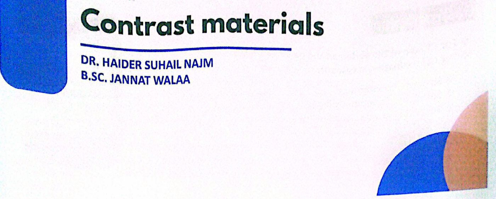
تصنيف مواد التباينCONTRAST MATERIALS CLASSIFIED
مادة غير ذائبةINSOLUBLE MATERIAL
BARIUM SULPHATE
كبريتات الباريوم
المواد الذائبة في الماءWATER SOLUBLE MATERIALS
- • ORAL:GASTROGRAPHINعن طريق الفم: غاستروغرافين
- • IV:UROGRAPHIN, TELEBRIXعن طريق الوريد (IV): يوروغرافين وتيليبريكس
- • INTRA THECAL : LOHEXOLداخل القراب: LOHEXOL
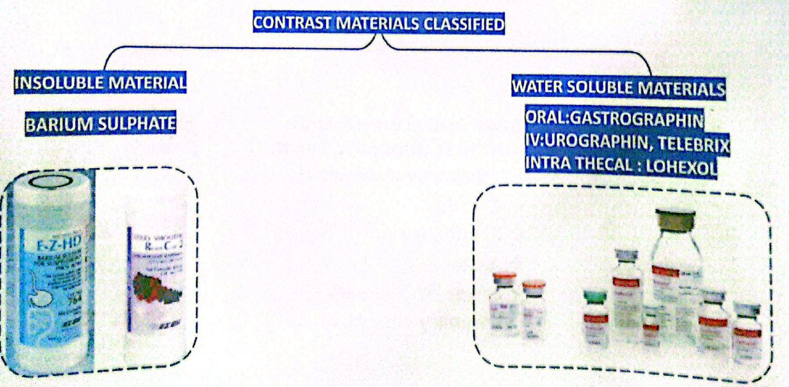
مواد التباين الذائبة في الماء عن طريق الفمWater Soluble Contrast Media For Oral Use
مواد التباين الذائبة في الماء للاستعمال عن طريق الفمWater Soluble Contrast Media For Oral Use
غاستروغرافينGastrographin
- • For CT scan of the abdomen and pelvisلفحص CT (المفراس) للبطن والحوض.
- • For GIT evaluation in cases of:لتقييم الجهاز الهضمي في حالات:
- • Suspected perforationالاشتباه بالانثقاب.
- • Suspected anastomotic leakageالاشتباه بالتسرّب من موضع المفاغرة.
- • Suspected intestinal obstructionالاشتباه بانسداد الأمعاء.
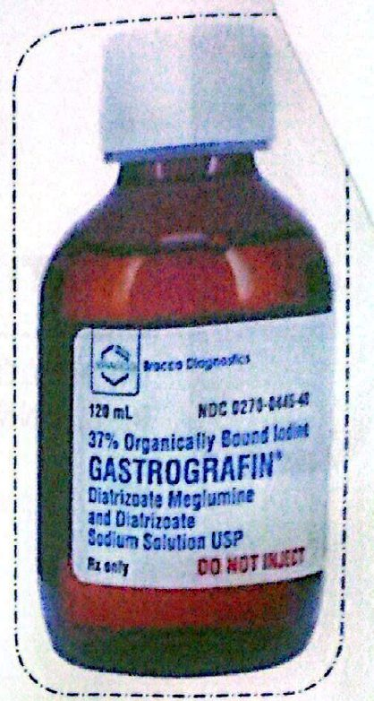
مواد التباين الذائبة في الماء للحقن الوريديWater Soluble For IV Used
المواد الذائبة في الماء للاستعمال الوريديWATER SOLUBLE FOR IV USED
IONIC · NON IONIC
نوعان: أيوني وغير أيوني.
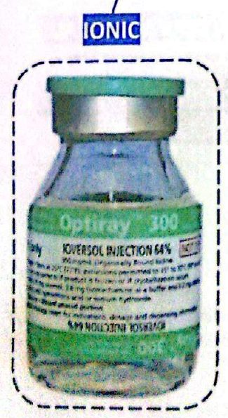
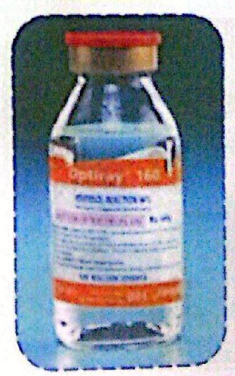
All CT examination using contrast material CHEST, ABDOMEN, BRAIN,....
كل فحوص CT التي تستعمل مادة التباين: الصدر، البطن، الدماغ،....
CT angiography of any vessel
تصوير الأوعية بالمفراس (CT angiography) لأي وعاء دموي:
- • Carotidالشريان السباتي.
- • Pulmonaryالأوعية الرئوية.
- • Aortaالأبهر.
- • Lower limb vesselsأوعية الطرف السفلي.
- • Coronary vessels, ........الأوعية التاجية، ........
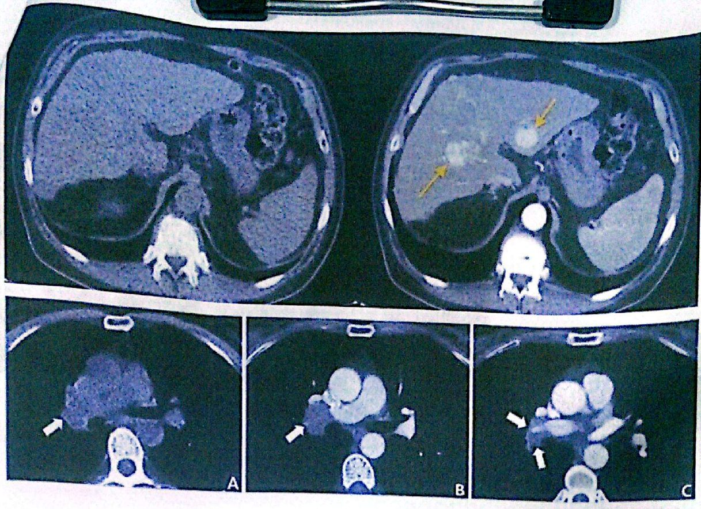
التفاعلات مع مواد التباين المحقونة في الوريدReaction to contrast media injected intravenously
التفاعل مع مواد التباين المحقونة في الوريدReaction to contrast media injected intravenously
- 1. Nausea and vomitingالغثيان والتقيؤ.
- 2. Skin rashالطفح الجلدي.
- 3. Dyspnea and tachycardiaضيق التنفس وتسرّع القلب.
- 4. Hypotension and shockانخفاض ضغط الدم والصدمة.
- 5. Cardiac arrestتوقّف القلب.
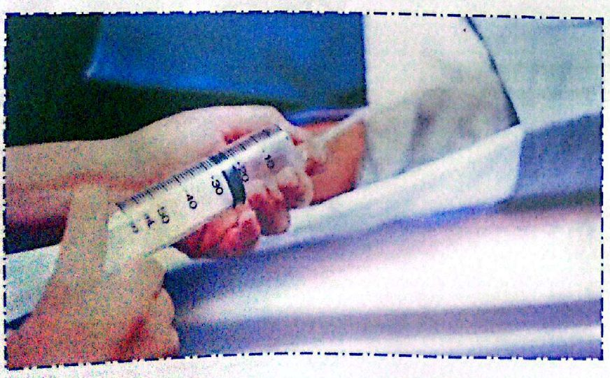
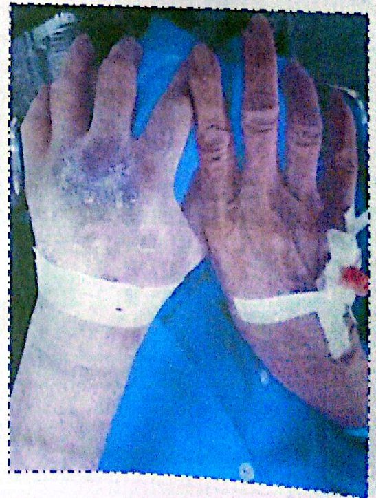
مواد التباين الذائبة في الماء للحقن داخل القرابWater soluble contrast media for intra-thecal injection
مواد التباين الذائبة في الماء للحقن داخل القرابWater soluble contrast media for intra-thecal injection
أومنيباكOMNIPAQUE
- • Cervical myelographyتصوير النخاع الشوكي في المنطقة العنقية.
- • Dorsal myelographyتصوير النخاع الشوكي في المنطقة الظهرية.
- • Lumbar myelographyتصوير النخاع الشوكي في المنطقة القطنية.
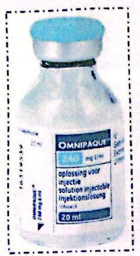
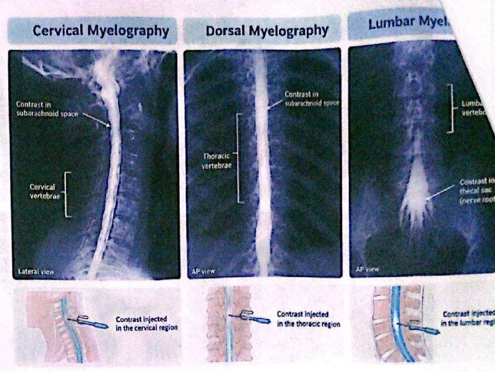
الباريومBarium
Barium suspension is made up from pure barium sulphate.
يُصنع معلّق الباريوم من كبريتات الباريوم النقية.
(Barium carbonate is poisonous.)
(كربونات الباريوم سامّة.)
The particles of barium must be small (0.1–3 µm), since this makes them more stable in suspension.
يجب أن تكون دقائق الباريوم صغيرة (0.1–3 µm)، لأن ذلك يجعلها أكثر ثباتاً في المعلّق.
A non-ionic suspension medium is used, for otherwise the barium particles would aggregate into clumps.
يُستعمل وسط تعليق غير أيوني، وإلّا تتجمّع دقائق الباريوم على شكل كتل.
The resulting solution has a pH of 5.3, which makes it stable in gastric acid.
المحلول الناتج درجة حموضته pH 5.3، وهذا يجعله ثابتاً في حامض المعدة.
- • It Used To Outlines Structure , Lumen , Large Abnormalities .يُستعمل لإظهار حدود التركيب وتجويفه والتغيّرات المرضية الكبيرة.
- • If PERFORATION or OBSTRUCTION is suspected should not be used.إذا اشتُبه بالانثقاب أو الانسداد فلا يجب استعماله.
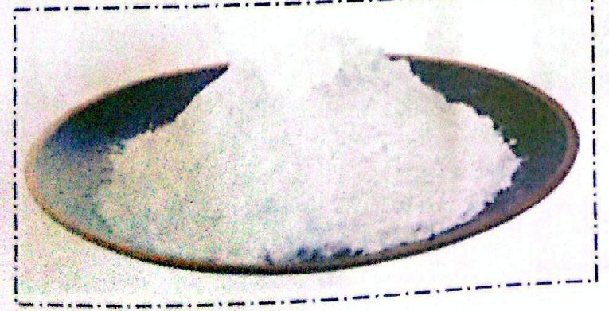
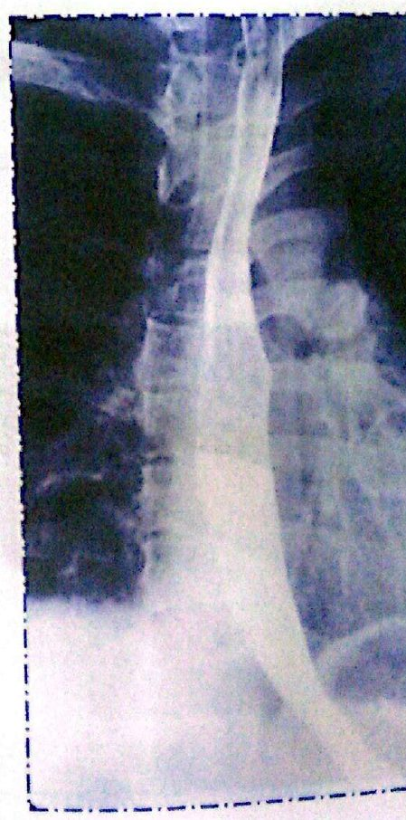
التضيّق وعيب الامتلاء والرتجStricture, Filling Defect and Diverticulum
التضيّقSTRICTURE
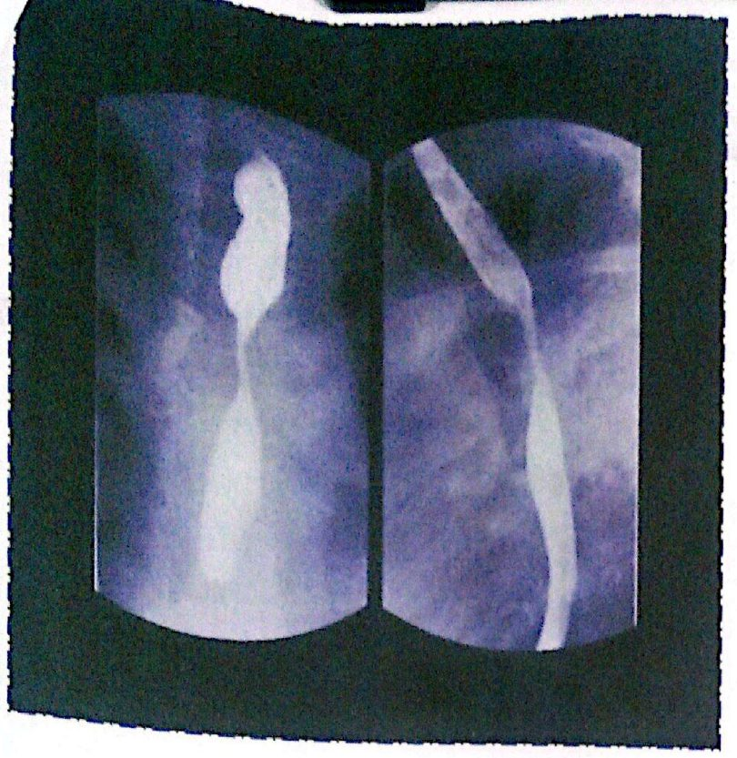
عيب الامتلاءFILLING DEFECT
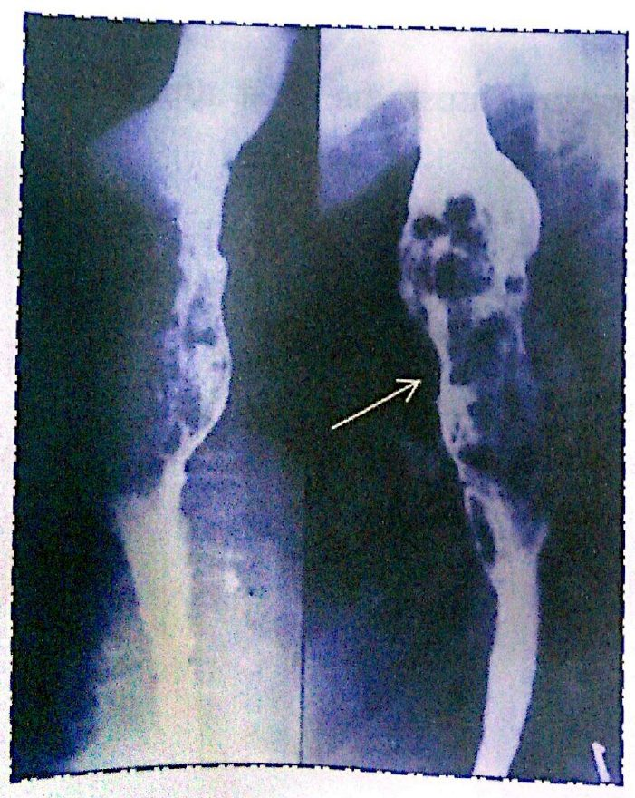
الرتجDIVERTICULUM
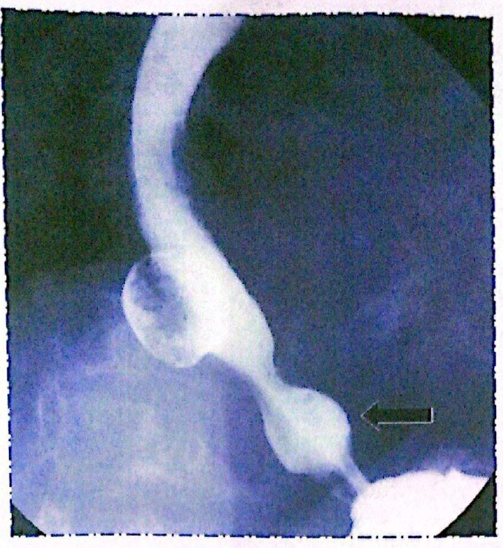
اختيار مادة التباين المناسبةChoose the Most Appropriate Contrast Medium
According to previous information choose the most appropriate contrast medium for each case:
بحسب المعلومات السابقة، اختر مادة التباين الأنسب لكل حالة:
- • Case1: patient referred for evaluation of swallowing difficultyالحالة 1: مريض مُحال لتقييم صعوبة البلع.
- • Case2: patient suspected small bowel obstructionالحالة 2: مريض يُشتبه بانسداد الأمعاء الدقيقة لديه.
- • Case3: patient with suspected GI perforationالحالة 3: مريض يُشتبه بانثقاب الجهاز الهضمي لديه.
- • Case4: patient referred for evaluation of colonic mucosal abnormalityالحالة 4: مريض مُحال لتقييم اضطراب في الغشاء المخاطي للقولون.
التباين المفرد مقابل المزدوجSingle vs Double contrast
التباين المفرد مقابل التباين المزدوجSingle vs Double contrast
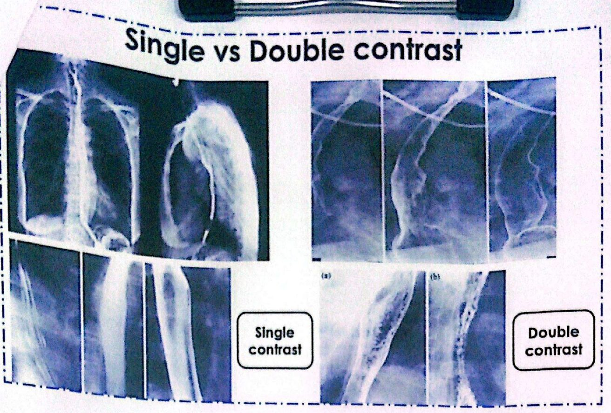
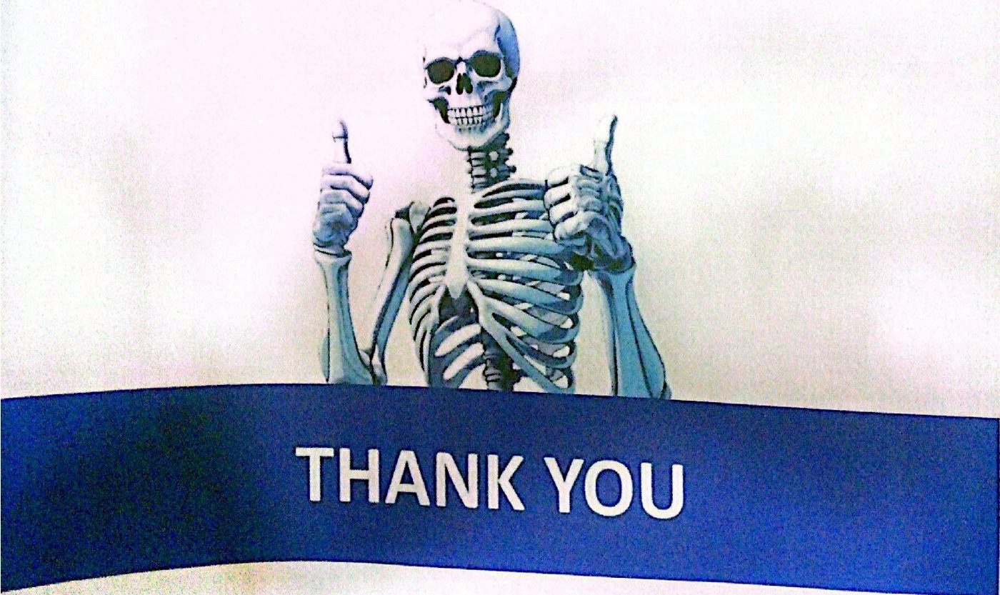
المحاضرة مسموعة
نص الأستاذ بالإنكليزي مثل الأصل · 3.0 دقيقة. اضغط أي جملة تسمعها، أو مصطلح منقّط تسمع لفظه ومعناه.
Contrast Materials Classifiedتصنيف مواد التباين
Contrast Materials Classified
CONTRAST MATERIALS CLASSIFIED
INSOLUBLE MATERIAL
BARIUM SULPHATE
WATER SOLUBLE MATERIALS
ORAL:GASTROGRAPHIN
IV:UROGRAPHIN, TELEBRIX
INTRA THECAL : LOHEXOL
Water Soluble Contrast Media For Oral Useمواد التباين الذائبة في الماء عن طريق الفم
Water Soluble Contrast Media For Oral Use
Water Soluble Contrast Media For Oral Use
Gastrographin
For CT scan of the abdomen and pelvis
For GIT evaluation in cases of:
Suspected perforation
Suspected anastomotic leakage
Suspected intestinal obstruction
Water Soluble For IV Usedمواد التباين الذائبة في الماء للحقن الوريدي
Water Soluble For IV Used
WATER SOLUBLE FOR IV USED
IONIC · NON IONIC
All CT examination using contrast material CHEST, ABDOMEN, BRAIN,....
CT angiography of any vessel
Carotid
Pulmonary
Aorta
Lower limb vessels
Coronary vessels, ........
Reaction to contrast media injected intravenouslyالتفاعلات مع مواد التباين المحقونة في الوريد
Reaction to contrast media injected intravenously
Reaction to contrast media injected intravenously
Nausea and vomiting
Skin rash
Dyspnea and tachycardia
Hypotension and shock
Cardiac arrest
Water soluble contrast media for intra-thecal injectionمواد التباين الذائبة في الماء للحقن داخل القراب
Water soluble contrast media for intra-thecal injection
Water soluble contrast media for intra-thecal injection
OMNIPAQUE
Cervical myelography
Dorsal myelography
Lumbar myelography
Bariumالباريوم
Barium
Barium suspension is made up from pure barium sulphate.
(Barium carbonate is poisonous.)
The particles of barium must be small (0.1–3 µm), since this makes them more stable in suspension.
A non-ionic suspension medium is used, for otherwise the barium particles would aggregate into clumps.
The resulting solution has a pH of 5.3, which makes it stable in gastric acid.
It Used To Outlines Structure , Lumen , Large Abnormalities .
If PERFORATION or OBSTRUCTION is suspected should not be used.
Stricture, Filling Defect and Diverticulumالتضيّق وعيب الامتلاء والرتج
Stricture, Filling Defect and Diverticulum
STRICTURE
FILLING DEFECT
DIVERTICULUM
Choose the Most Appropriate Contrast Mediumاختيار مادة التباين المناسبة
Choose the Most Appropriate Contrast Medium
According to previous information choose the most appropriate contrast medium for each case:
Case1: patient referred for evaluation of swallowing difficulty
Case2: patient suspected small bowel obstruction
Case3: patient with suspected GI perforation
Case4: patient referred for evaluation of colonic mucosal abnormality
Single vs Double contrastالتباين المفرد مقابل المزدوج
Single vs Double contrast
Single vs Double contrast
25 سؤال من نص المحاضرة، ويّا «ليش صح» بعد كل جواب.
ابدأ الاختباراضغط أي مصطلح منقّط تسمع لفظه ومعناه.
PDF ثنائي اللغة: نص الأستاذ + الترجمة + الخلاصة + الأسئلة · 2.7 MB
تحميل الملف